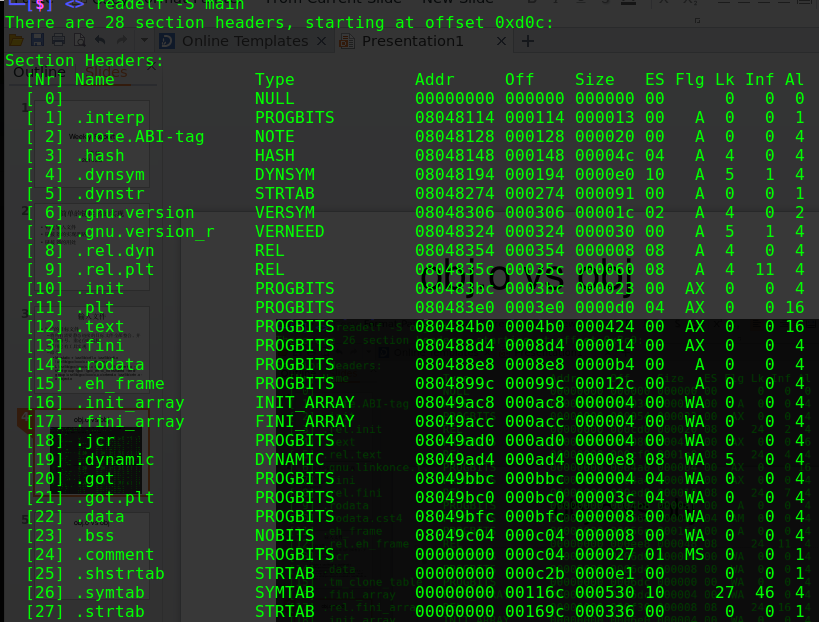

对链接器的研究工作源于目标代码混淆的项目。想要对二进制代码进行混淆，首先对可执行文件 进行了评估。可执行文件的代码段的重定位已经被修复，缺少重定位信息，当在代码段里面插改 指令的时候需要照顾到全部的重定位内容，因此混淆会有很大的限制，而且对于修改后的重定位 的修复的正确性会是一个考验。所以混淆的对象就转向了二进制的目标代码，而想要在编译的过 程去做一个等价变换的话，想来可行但是编译器的大黑盒实在是实力有限，我还是暂时不动这个 方向了。于是就转向了较为简单点的，从链接过程去下手。好吧，上来就先跑题了。我是要介绍 链接器的工作的，废话就先讲了一堆，进入正题。
程序的编译链接过程
拜IDE或者是gcc的功能所赐，在程序的诞生过程中最复杂的编译链接过程被隐藏在了一个按钮或 者是一句简单的命令之下。虽然说有时并不需要去了解那么底层，使用默认配置就可以生成自己 写的程序，但是想要理解程序到底是如何产生的，或者去调试一些库相关的错误的时候，就必须 对程序的编译链接过程有所掌握。
整个编译链接的过程包括了预处理，编译，汇编，链接四个过程。

预编译
预编译的过程就是处理源代码中以“#”开头的预编译指令。简单说就是将你在代码中为了方便编码 的一些定义全部替换成原始的样子。对于调试宏定义相关的或者头文件包含的问题时，可以查看 预编译后的文件。
编译
编译的过程包括了词法分析，语法分析，语义分析，中间代码生成几个步骤。每个方面都够一本 书来介绍的了。编译的过程就是把你的源代码的文件翻译成了汇编指令。
汇编
汇编的过程比较简单。因为几乎每一条汇编指令就对应一条机器指令，因此汇编器的过程就是把 遇到的汇编指令翻译成二进制代码即可。
链接
链接的过程简单地讲就是把所有输入的目标文件，静态库文件（其实也是目标文件，只是打包放
在一起而已），还有动态库文件中的一些信息合并到一个可执行的文件中去。我们可以通过gcc
--verbose test.c来查看一下默认情况下链接器的参数
gcc --verbose test.c
---------------------------------------------
...
/usr/lib/gcc/i686-pc-linux-gnu/4.8.2/collect2
--hash-style#gnu -m elf_i386
-dynamic-linker /lib/ld-linux.so.2
/usr/lib/gcc/i686-pc-linux-gnu/4.8.2/../../../crt1.o
/usr/lib/gcc/i686-pc-linux-gnu/4.8.2/../../../crti.o
/usr/lib/gcc/i686-pc-linux-gnu/4.8.2/crtbegin.o
-L/usr/lib/gcc/i686-pc-linux-gnu/4.8.2
-L/usr/lib/gcc/i686-pc-linux-gnu/4.8.2/../../..
test.o
-lgcc --as-needed -lgcc_s --no-as-needed -lc -lgcc --as-needed -lgcc_s --no-as-needed
/usr/lib/gcc/i686-pc-linux-gnu/4.8.2/crtend.o
/usr/lib/gcc/i686-pc-linux-gnu/4.8.2/../../../crtn.o
命令参数解释：
- collect2: 这里其实就是gcc封装的一个ld
- -dynamic-linker ld-path: 告诉链接器动态链接器的路径
- crt1.o crti.o crtbegin.o crtend.o crtn.o: 都是与运行相关的目标文件
- -Lpath: 告诉链接器应该去哪些路径下搜索静态共享库和动态共享库
- -lxxx: xxx即是你的程序要链接的动态共享库或者静态共享库
我们可以把这个命令简化一下：
ld -dynamic-linker /lib/ld-linux.so.2 crt1.o crti.o crtbegin.o test.o
-lgcc -lgcc_s -lc crtend.o crtn.o -o test
对于最简单的例子，命令执行过后，经过了链接过程，就会最终生成test的可执行程序。
链接器的起源和目标
从上面的一个最简单的例子可以看到，链接器是工作在可执行程序生成前的最后一步的。它是这 么的重要，但是为什么必须要链接器呢？
为什么要有链接器
既然是要考虑链接器的存在的必要性，那么我们可以换一个角度，考虑一下如果没有链接器，那 么什么样的程序才可以被CPU执行呢？
比如说：
0 nop
1 nop
2 hlt
好吧，这就是个玩笑。我就是想借着说明一下如果存在这种程序的话，这样的程序会有什么样的特点:
- 不涉及外部调用
- 程序没有绝对跳转指令/或者有绝对跳转以及绝对地址引用时，程序必须加载到固定的内存空间中
- 程序一定是手工直接写二进制的，而且写定了就不能变了, 也就是必须自成一体
可以看到整个程序无论从创建到运行的过程都是非常固定，死板的，而如果有了链接器的加入呢 ，即使不考虑现代编译器给我们带来的编程的便利性，单纯用机器可执行的汇编进行编程，我们 可以获得非常多的好处。
- 编写程序时可以用符号表示一个地址
- 编写程序时不需要考虑地址问题
- 可以将程序模块化
- 程序加载的地址空间自由
链接器的功能，目标
链接器的输入是二进制的有重定位信息的目标文件，目标文件相比最终的可执行的程序来说，指 令的结构已经确定了，而不同处只是在于一些指令内部的操作数（也就是符号的地址）还没有确 定，这些信息会以重定位段的形式保存在目标文件中。而链接器的功能和目标用一句话来说， 就是解决这些指令中的对符号的地址的引用，从而让可执行程序运行到该指令的时候，可以正确 地找到需要的目标。
我们还是用一个例子来说明链接器的功能，也就是链接器都做到了什么
00000000 <main>:
0: 55 push %ebp
1: 89 e5 mov %esp,%ebp
3: 83 e4 f0 and $0xfffffff0,%esp
6: 83 ec 10 sub $0x10,%esp
9: c7 04 24 00 00 00 00 movl $0x0,(%esp)
10: e8 fc ff ff ff call 11 <main+0x11>
15: c9 leave
16: c3 ret
这段汇编对应的C语言程序是：
#include <stdio.h>
int main()
{
printf("hello, world\n");
}
当经过链接器的链接过程后，生成了最终的可执行程序，这里只贴上面对应的部分：
080483fd <main>:
80483fd: 55 push %ebp
80483fe: 89 e5 mov %esp,%ebp
8048400: 83 e4 f0 and $0xfffffff0,%esp
8048403: 83 ec 10 sub $0x10,%esp
8048406: c7 04 24 b0 84 04 08 movl $0x80484b0,(%esp)
804840d: e8 be fe ff ff call 80482d0 <puts@plt>
8048412: c9 leave
8048413: c3 ret
整个可执行程序的代码段其实还有上面讲到的有关运行的各个目标文件的代码段，以及链接器构 造的运行相关的指令。
对比前后的输入输出我们可以看到链接器做了以下事情：
- 为程序分配地址空间
- 将符号解析成具体的指令地址或数据地址
- 需要重定位的地方进行修复
链接器的工作流程
在介绍工作流程前，先做个说明，因为混淆相关的缘故，对链接器的研究没有覆盖到非常全面， 能够用现有链接器实现的地方，就直接使用了，所以就没有做相应的研究。具体的地方就是对输 入文件的处理上。
正常的链接器是可以处理多个输入文件，然后通过静态连接过程把所有的文件链接成一个单一的 可执行文件。而我对链接器的研究是建立在特殊的输入文件上的。也就是，我研究的是已经用链 接器链接出了一个单一的目标文件，完成了整个静态链接的流程。然后我在这个基础上，继续实 现生成一个可执行的程序。
所以对于一个C语言程序，整个工作流程就变成了：(链接器从3开始)
- 生成.c文件对应的目标文件
- 用ld链接所有目标文件，将所有需要静态连接的文件链接在一起生成一个“大”的目标文件
- 获取目标文件的相关信息：段，符号，重定位
- 构建与执行相关的段
- 分配段地址
- 符号解析
- 重定位
- 创建其他运行相关的内容
这样最终可以生成一个可执行的程序。
构造“大”的目标文件
通过之前gcc --verbose的输出我们已经知道了gcc默认给我们都链接了哪些目标文件，因此，
我们可以自己手动去完成这个静态链接的过程，从而生成一个“大”的目标文件。需要的操作如下
：
ld -static -r /usr/lib/crt1.o /usr/lib/crti.o /usr/lib/gcc/i686-pc-linux-gnu/4.8.2/crtbegin.o -L/usr/lib/gcc/i686-pc-linux-gnu/4.8.2 -L/usr/lib -L/lib test.o -lgcc -lgcc_eh -lc_nonshared /usr/lib/gcc/i686-pc-linux-gnu/4.8.2/crtend.o /usr/lib/crtn.o -o obj.o
命令生成一个大的目标文件obj.o，下面我们也用obj.o来说明链接器的工作流程
obj.o vs obj
链接过程实际上是不需要知道你的程序的细节的，它不需要去反汇编了解你的每一条指令。链接 的操作对象可以看作是对目标文件的每一个段进行操作。因此，我们可以通过输入文件与输出文 件的段的内容对比来看链接器在这个过程都做了些什么操作。

其中可执行文件的段表是比较固定的，我们可以按照这个layout去构建相应的段。具体每个段需 要进行的操作如下：
| 段名 | 操作 | 段名 | 操作 |
|---|---|---|---|
| .interp | 自建 保存动态链接器路径 | .eh_frame | 改变 异常处理相关 |
| .note.ABI_tag | 不变 | .jcr | 不变 |
| .hash | 自建 动态符号名的hash | .dynamic | 自建 动态链接相关 |
| .dynsym | 自建 动态符号表 | .got | 自建 外部变量的地址 |
| .dynstr | 自建 动态符号名 | .got.plt | 自建 外部函数地址 |
| .gnu.version | 自建 动态符号版本号 | .data | 不变 |
| .gnu.version_r | 自建 版本号要求 | .bss | 大小会变 |
| .rel.dyn | 自建 .got的rel | .init_array | 处理重定位 |
| .rel.plt | 自建 .got.plt的rel | .fini_array | 处理重定位 |
| .init | 处理重定位 | .commit | 改变 无影响 |
| .plt | 自建 跳转代码 | .shstrtab | 改变 根据段名建立 |
| .text | 处理重定位 | .symtab | 改变 无影响 |
| .fini | 处理重定位 | .strtab | 改变 无影响 |
| .rodate | 不变 |
其他需要创建的内容
- Section Header Table
- Program Header
- ELF File Header
demo的实现
Reference
Arch安装配置
使用archlinux大概也有一年多的时间了，之间安装系统这件事估计两只手已经数不过来了。不过 倒不是因为arch会经常崩，反而只要每天升级前看一下arch官网挂出来的提示，一般都没有遇到 大的升级后无法正常使用的情况。第一次安装配置的时候要花一两天的时间，而现在基本半个 钟就可以完成安装和基本配置的工作了，不过每次安装都要参考官网的Beginners' guide 。所以，要好好把这个流程梳理出来，形成一篇自己的Beginners' guide吧。
准备阶段
每次安装采用的都是U盘安装，U盘安装比较方便易行，不受什么其他的限制吧。整个操作也是非
常简单的。只需要简单的dd就可以了。
dd if=archlinux.iso of=/dev/sdX
安装阶段
和一般的操作系统安装的流程类似，arch的安装也是要分区，拷贝系统，进行配置的操作。不过 这些操作中在其他的操作系统的安装过程中会通过和用户的交互来进行，而arch的安装则是要自 己输入命令来完成了。
基本安装
用制作好的U盘系统盘启动，会进入到一个root登录的小的arch系统。我们就在这个系统下进行对 自己的硬盘上的系统的安装。
配置网络
进入了小的arch系统后，这个系统是没有联网的 ...
read morepython数据类型总结
从去年8月份开始学习python到现在，虽然没有写过什么高级的东西，但使用过程中，个人感觉 python的灵活使用很大部分来自于其内置的数据类型。刚好这一段时间读了Learning Python, 书里面用了一个Part来介绍Python的数 据类型，故总结在此。
Python的内置数据类型
- Numbers
- Strings
- Lists
- Dictionaries
- Tuples
- Files
- Sets
Numbers
immutable
就注意下小数，分数都有内置的库支持。
Sets
mutable
Sets are collections of immutable objects and support operations correspond to math set operations.
适用点：
- 去重
- 在遍历图时，记录已经过结点
- 几个有一定关系的数据集之间可能发生集合操作的
Strings
immutable
对string的各个操作都会返回一个新的string，之前的string是不会变的。
Lists
mutable ...
read more博客搭建
pelican 简介
之前用Octopress和Jeklly都搭过博客，不过因为ruby不熟悉(借口啦)，写了没两篇慢慢就丢掉了 。后来突然发现这个用python写的博客生成工具，虽然感觉管理没有前两者那么方便，不过因为 python自己比较熟悉，方便hack，所以就选择它来重新搭起来自己的博客。
当然，写博客的才是最关键的啦！
搭建过程及创建文章
安装过程
pip install pelican
pip install Markdown
Configuration
Just follow the promption.
博客架构
blog/
├── content # 存放输入的源文件
│ └── (pages) # 存放手工创建的静态页面
├── output # 生成的输出文件
├── develop_server.sh # make devserver
├── Makefile # 方便管理博客的Makefile
├── pelicanconf.py # 主配置文件
└── publishconf.py # 主发布文件
放github
cd ...